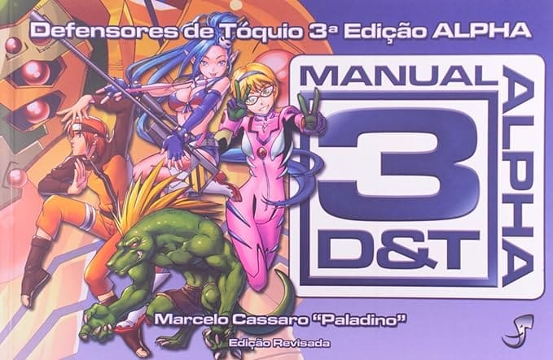

Sangue, Intrigas e o Mundo das Trevas
Bem-vindo ao Mundo das Trevas, onde a noite é eterna, e os segredos correm mais profundos do que o oceano. Em Vampiro: A Máscara, você mergulhará em um cenário de horror pessoal e fantasia urbana, onde os vampiros habitam as sombras da sociedade humana.

3Det: Simplicidade e Velocidade nas Suas Aventuras!
3Det é um sistema de RPG projetado para aqueles que desejam mergulhar rapidamente em aventuras sem se perder em regras complexas.

Clãs Vampíricos: Escolha seu Estilo Sombrio!
Bem-vindo ao mundo noturno de Vampiro: A Máscara, onde os clãs de vampiros se reúnem para um jantar sangrento e uma boa conversa sobre imortalidade.

Criando sua Identidade Noturna: A Ficha de Personagem em Vampiro: A Máscara
Bem-vindo ao submundo dos vampiros, onde a escuridão esconde segredos e o sangue flui como moeda de troca. A criação da ficha de personagem em Vampiro: A Máscara é um ritual que moldará sua existência eterna.
Clã Gangrel: Explorando a Besta e a Solidão
Como um membro do Clã Gangrel no universo de Vampiro: A Máscara, você está mais próximo da própria Besta e de sua natureza animalesca.

David Martinez: Um Edgerunner Solitário em um Mundo Implacável
No sombrio cenário de Cyberpunk 2077, David Martinez emerge como um personagem complexo e marcante. Vamos explorar quem ele é e como você pode trazê-lo à vida no sistema de RPG.